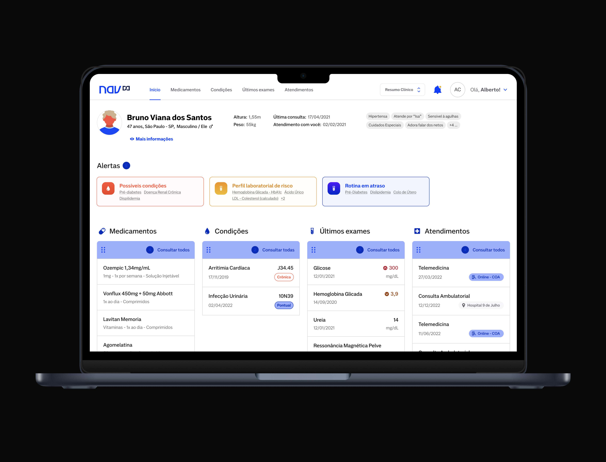
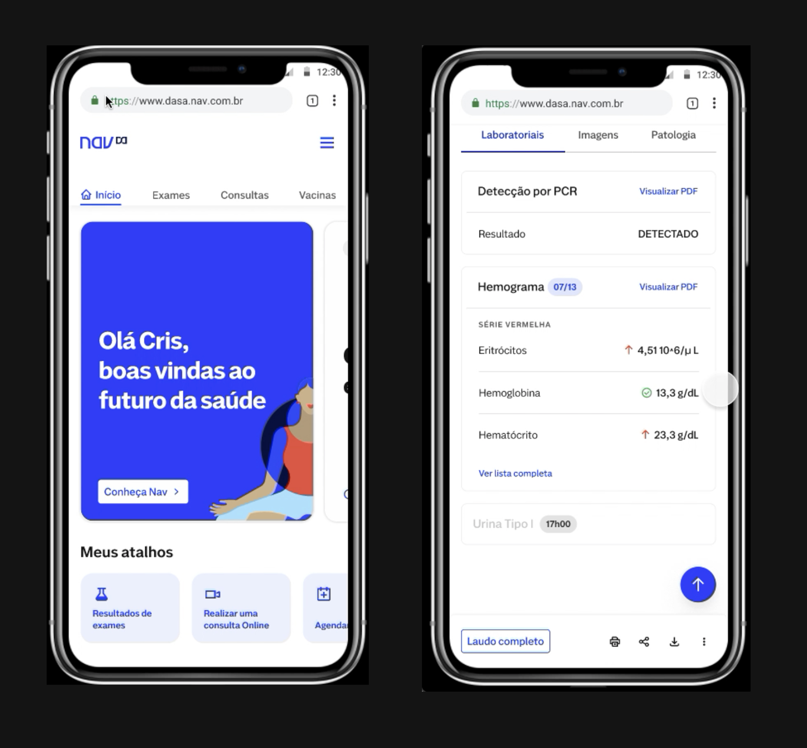
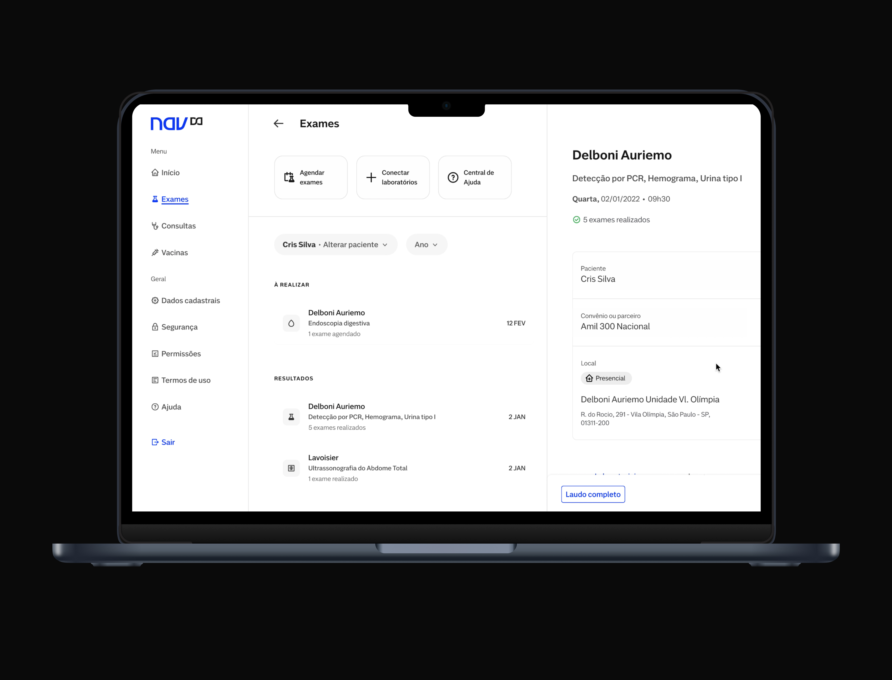
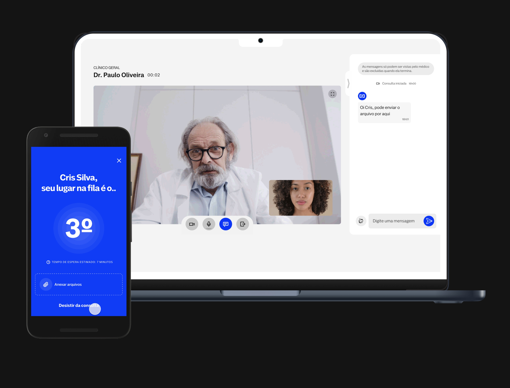
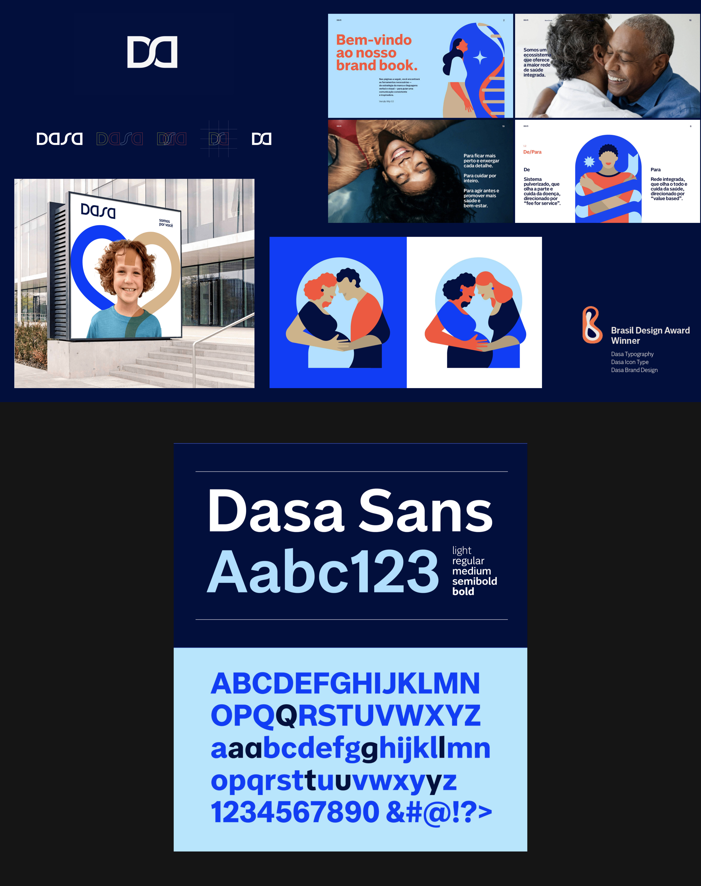
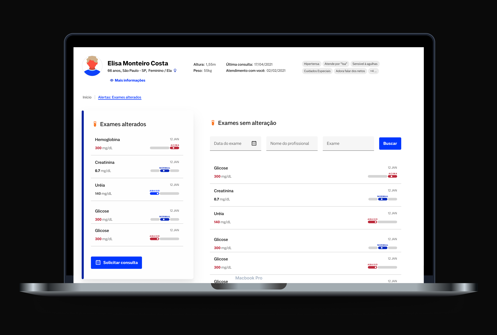

A complete digital healthcare ecosystem for patients, doctors, nurses, and hospital management — built from scratch with a team of 75 designers.
Company
A major healthcare company with an integrated health ecosystem in Latin America — encompassing hospitals, labs, imaging centers, and digital services.
When I joined, Dasa had little to no digital product culture. My mandate: build it from scratch.
My Role
Product 01
Dasa's pioneer app for customers — a comprehensive range of digital healthcare services in a single platform.
Designed to empower users with instant access to their healthcare information, the Nav app centralised all of Dasa's fragmented services into a single, cohesive experience.

Product 01 · Web
We streamlined and centralised all healthcare-related services and needs into a unified web platform and app.
The desktop experience mirrored the mobile app in scope but adapted the information architecture and layout to take full advantage of larger screens — enabling richer data visibility for results, scheduling, and medical records.

Product 01 · Feature
A significant milestone for the team — built and launched during the Covid pandemic.
The telemedicine platform enabled healthcare workers, including doctors and nurses, to conduct emergency calls and sustain medical treatment throughout the challenging period of the pandemic.
Services include digital prescriptions, updated queue info for medical emergencies, and appointment scheduling with specialists.
During the Covid-19 pandemic, this platform became essential infrastructure — enabling continuity of care when in-person visits were impossible across Dasa's network.

Product 02
An integrated healthcare data platform tailored for healthcare professionals — powered by robust data analytics and AI.
The platform excels in predicting and presenting a multitude of possible patient conditions using medical history and algorithms, enabling proactive and informed medical decision-making.
When seamlessly connected with Nav, the platform facilitates doctors to actively engage with their patients, strengthening communication and personalised healthcare strategies.
Nav Pro's AI-driven alert system reduced the time to treatment initiation by 6×, accelerating diagnosis and enabling 7k women (São Paulo) to begin cancer treatment sooner through a data-driven mapping initiative in São Paulo.
Product 03
In collaboration with the marketing team and design agencies, we orchestrated a complete overhaul of Dasa's digital and brand experience.

Design System Impact
The Alma Design System became the single source of truth for design and engineering across the entire Dasa product suite.
By standardising components, patterns, and accessibility guidelines, the system eliminated duplication across 75 designers and multiple product teams. The estimated time and cost savings: 1.5 years of collective design and development effort.

Highlights
| 9M+ | App Nav users at peak adoption | Nav App |
| 70K | Doctors registered on Nav Pro | Nav Pro |
| 80% | CSAT on the telemedicine and app experience | Telemedicine |
| 96.7% | CSAT on lab test results (app) | App Nav |
| 25→89% | CSAT improvement on web lab results | Desktop Web |
| +18% | Conversion improvement on lab scheduling | Conversion |
| +226% | Appointments growth Q1 2022 | Appointments |
| 6× | Reduction in time to start cancer treatment | Digital Impact |
| 7,000 | Women with accelerated cancer diagnosis | Digital Impact |
| 75→15 | Team scaled from 15 to 75 designers | Team |
| 1.5yr | Estimated effort saved by the Alma Design System | Design System |
| 5× | Brasil Design Award wins across the project | Awards |